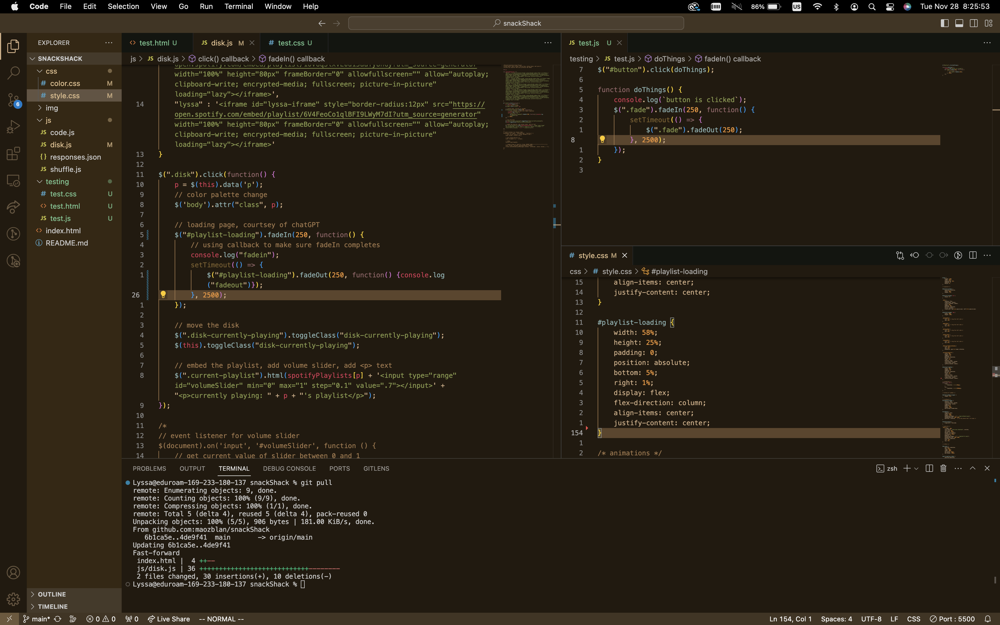

HIGH PROTEIN
a little about challenging things :)
This week we just debugged our old code and possibly other projects. And learnt to debug!
a little about my problems :0
Timeeeeeee not enough timeeeeee to do all the silly things I want to do and do them well. :(
a little self reflection :D
It was more of a working week... there were much more things to get then than to slow down and make sure that things are working properly. There wasn't anything to debug in the labs so I worked mostly on the group project. But even that was mostly implementation. There are plenty of better ways to do certain things, but at this point in time it was rather "get it done, and then get it done well" (which isn't good) but since there was so much to do, it is mostly just hoping we can get a working final first and foremost...
a little debugging :P
Fading effect on small scale "loading screen" wasn't working because of the extraneous "transition: opacity;" in the css when I tried to do it another way. There was also the fading box not being in the right position covering the other box so I had to turn on the borders for every div, reorganize the divs, and make sure that the boxes were well defined in terms of location and size. And 'z-order' was the key. After a long time of trying to put things over eachother by force, it was just z-order.
